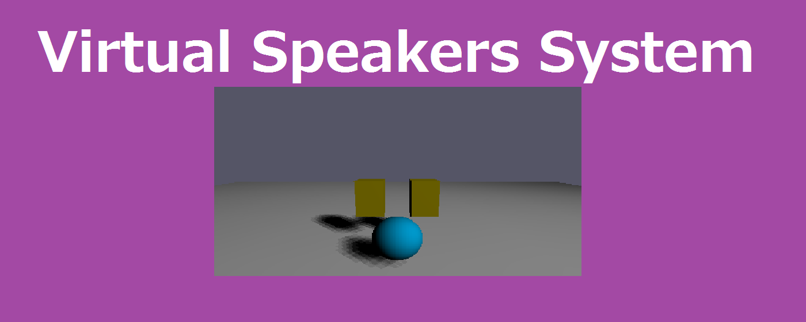
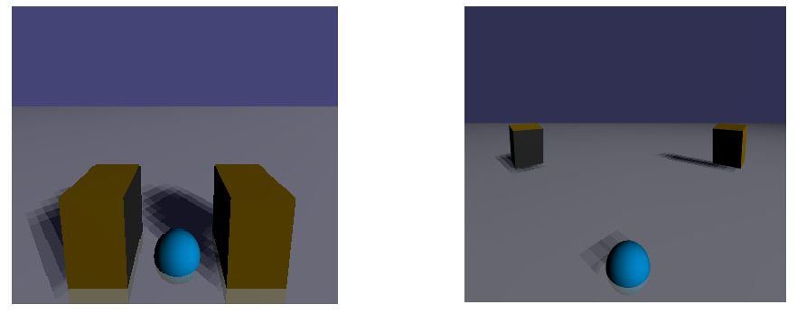

WebAudio Virtual Speakers System (WVS)
Using headphones or earphones, you feel the sound comes from just close to your ears or from the center of the head.
WVS converts your favorite music to Binaural 3D sound and plays in natural audio space with headphones or earphones.
Supported audio codec is FLAC, WAV, MP3, OGG, and requires a PC supported WebAudio.
[Oops!] Chrome V60.0.3112.78 causes latency?!
----> USE WVS online/offline for PC/Mobile :
https://virtualsp.github.io/VirtualSPD/
[* NEW *]
/ Updated Sorround effects (June 2017)
/ Display embeded Album Art
/ Supports FLAC files !!
/ Added play loop button
/ Improved sound quality / Corresponds to the earphone
/ Automatically save/load settings of each music file on local chrome storage
/ Automatically loads last speakers position
/ Multiple file select available
/ Surround speakers & Bass-Treble control
Moving the position of the speakers on the screen, you can enjoy your favorite music with suitable spatial sound just like you.
The function of each slider are as follows.
x : distance between the speakers
y/z: height / depth of the speakers